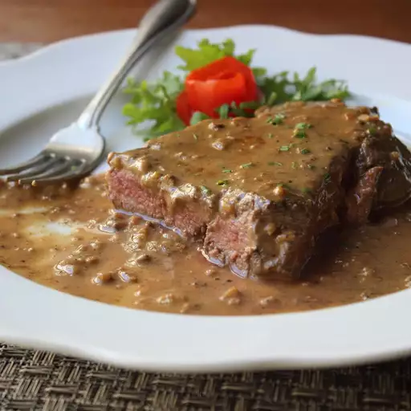

Steak Diane Recipe
Home

Description
Steak Diane was a staple on menus in fine dining restaurants back in the day. It was prepared tableside where the server ignited the cognac for an impressive sight. This recipe is a much easier yet just as delicious version of the retro classic.
Ingredients
- ½ cup demi-glace
- 1 tablespoon Dijon mustard
- 2 teaspoons Worcestershire sauce
- 1 teaspoon tomato paste
- 1 pinch cayenne pepper
- 2 teaspoons vegetable oil
- 2 (8 ounce) beef tenderloin steaks, fully trimmed, pounded to ½-inch thick
- kosher salt and freshly ground black pepper, to taste
- 1 tablespoon unsalted butter, cut into small chunks
- 3 tablespoons shallot, minced
- ¼ cup Cognac or brandy
- ¼ cup heavy cream
- 2 teaspoons sliced fresh chives
Steps
- Season steaks generously on both sides with salt. Allow steaks to come to room temperature while you make the sauce.
- Stir together demi-glace, mustard, Worcestershire sauce, tomato paste, and cayenne pepper in a bowl.
- Heat oil in a skillet over very high heat, swirling carefully to evenly cover surface. When oil reaches a smoking point, transfer steaks to oil; add a few chunks of butter. Sear meat on high heat until brown on each side, 2 to 3 minutes per side; keep them on the rare side. An instant-read thermometer inserted into the center should read 125 degrees F (52 degrees C). Transfer steaks to a warm plate.
- Stir shallots into skillet; cook until softened, 2 to 3 minutes. Remove skillet from heat; pour in Cognac. Carefully ignite with a fireplace lighter. When alcohol burns off and flames go out, return skillet to high heat and bring to a boil; cook, stirring, a few minutes to reduce slightly. Add demi-glace mixture, cream, and any accumulated juices from the steak. Cook on high heat just until sauce starts to thicken, 3 to 5 minutes. Transfer steaks back to pan and reduce heat to low. Gently simmer until meat is heated through and cooked to your desired level of doneness.
- Transfer to hot plates and serve with a generous spoonful or two of sauce. Sprinkle with chives.